Flâneur Club - September - 360 View
Andrew Nolan
2026-10-07
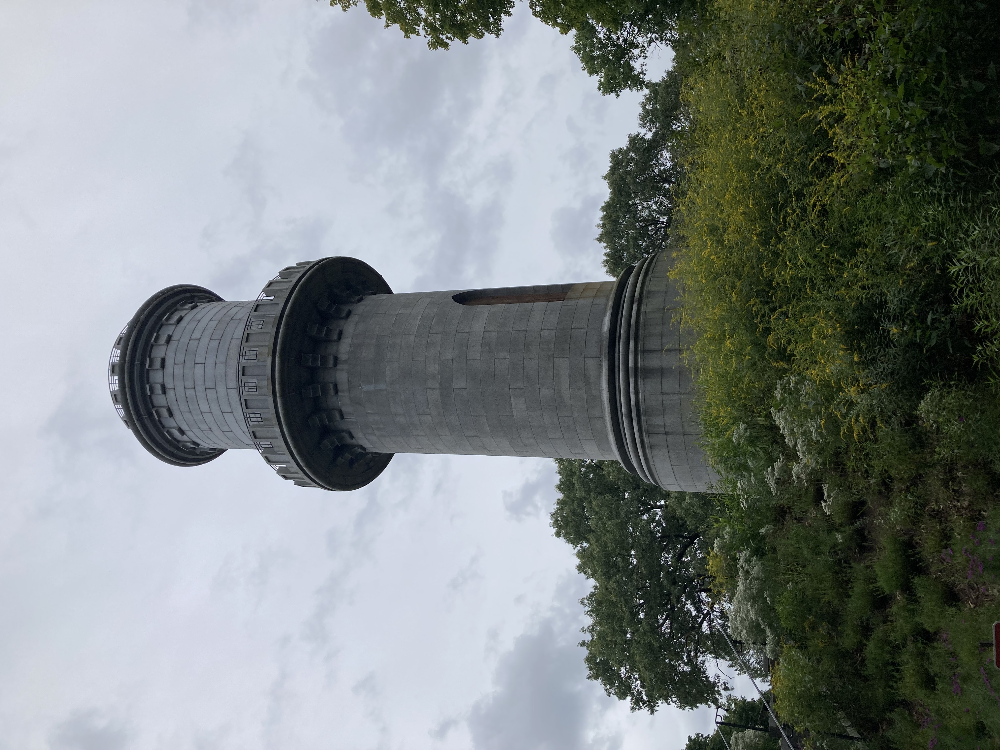
A few months ago, the Friends of Cambridge Library hosted a fundraiser tour of fancy gardens in Cambridge. One of the stops included Mount Auburn Cemetery. Unfortunately, due to time constraints, we couldn't spend too much time there that day. The other gardens were private residences so we only had that day to visit them. We promised ourselves we'd revisit the cemetery. Now, we finally had a chance.
Mount Auburn Cemetery is a National Historic Landmark and the first garden cemetery in the US. Opening in 1831 and modeled after a Parisian cemetery, Père Lachaise Cemetery, Mount Auburn became a model for garden cemeteries in the United States during the 1800s. Garden cemeteries, also known as rural cemeteries, were popular in the mid 1800s as cities became full. These new types of graveyards were built on the outskirts of urban areas, about 1-5 miles away, far enough to be separate but close enough to be easily visited. They were much more park like that traditional church yard cemeteries and included many monuments and sculptures.
In the 1840's Mount Auburn Cemetery was considered one of the most popular tourist destinations in the country, drawing around 60,000 visitors in 1848 and competing for the top tourist spot with the likes of Niagra Falls and Mount Vernon.
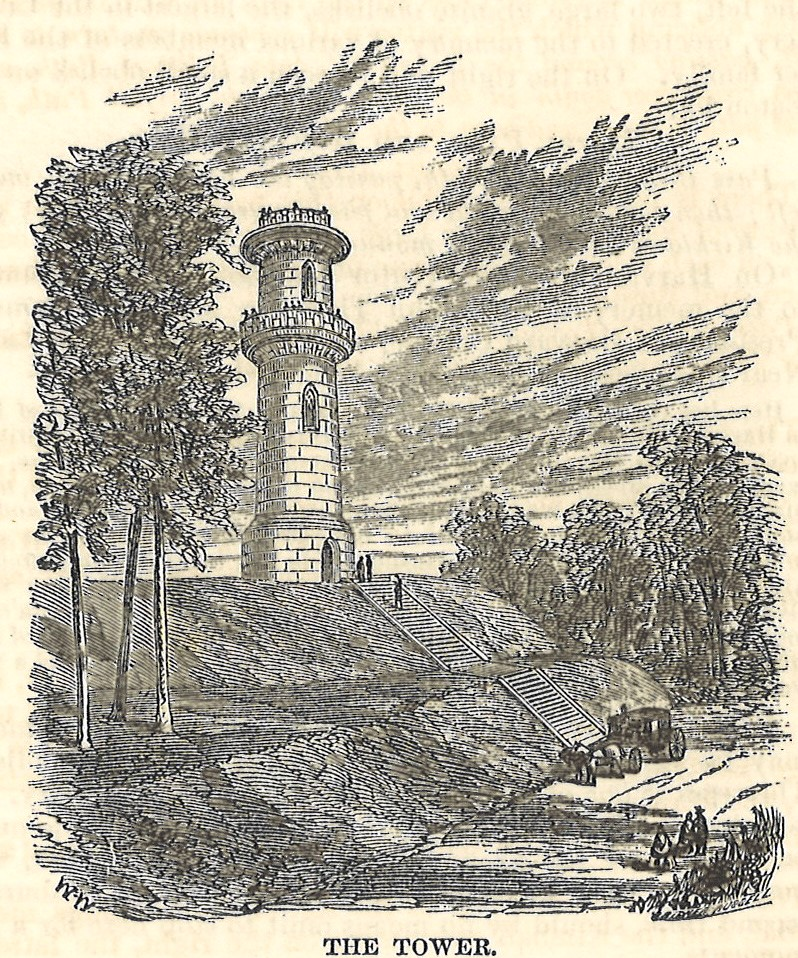
The gardens, architecture, and historic grave sites are all worthy of their own blog. But today, we are discussing a 360 view. So why a cemetery? Well, this one has a big tower! The Washington Tower was built between 1852 and 1854 in honor of President Washington. The tower was meant to draw attention to the cemetery and provide panoramic views creating a sense of connection with the surrounding areas. It stands is 62 feet high and sits atop the tallest hill in the park at 125 feet. This puts the view from the top firmly above the treeline. With no other competing buildings on the 170 acre property, the tower provides an unfettered view of the surrounding area.
So that is where we went!
The tower was designed by Jacob Bigelow. It was meant to resemble a Feudal Age tower. Apparently this was a popular image to build in the 1850s. We'll take more about Mr. Bigelow later on.


Starting from the North, what do we see? Well, from the North, we see a lot of trees. Note to self, I should visit this tower in October when the trees have turned for fall. Slightly to the West in the North we see one tower poking out from the trees. This is an apartment building. Seems to be "Parkside Place" at 700 Huron Street in Cambridge, right by Fresh Pond, one of the reservoirs for the city of Cambridge and a nice park! Not too much to say about it. It is a newish building filled with expensive apartments...
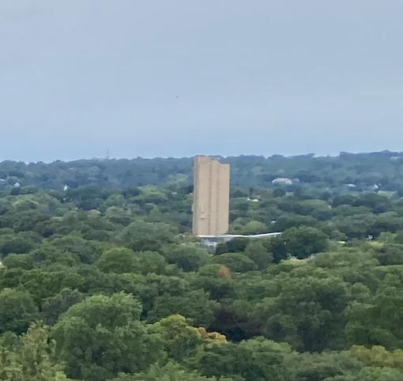
Continuing East, nearer to the tower, we can see the top of Bigelow Chapel pointing through the trees.
Bigelow, that sounds familiar.
This is the main chapel used by the cemetery. It is a Gothic Revival built a few years before the tower, 1844 to 1846. The chapel is named after its designer, Jacob Bigelow. Mr. Bigelow also happens to be a founder and second president of the cemetery. And as we mentioned earlier, he designed the tower we were standing on too!
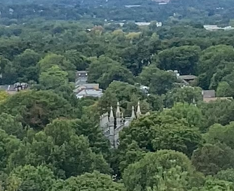
Further East, we see new developments around the Alewife station. Sorry, you may have to zoom in on your browser or phone here to see it in the photo. Alewife Station is the Northern terminus of the the MBTA Red line train. It houses a nearly 2,500 parking spots, a bus terminal, connections to regional rail trails, and of course the subway stop. This had primarily been an empty area apart from the commuter hub until a few years ago when all the big developments we can see started popping up.
Why the development now?
Cambridge City Council approved some big moves. They rezoned the area near the station, known as the Alewife Quadrangle, to allow for transit-oriented development near the station. This means a lot of new apartments, and maybe not a lot of new parking. Cambridge's recent changes to multi-family zoning also improved this construction frenzy. The new rules allowed more 4-story residential buildings, little or no setbacks, and no parking minimums.
These reforms don't mean there is now a surplus of housing. The Boston area has a lot more demand than supply and that is still an issue. Alewife was a prime area for this type of development but only provides a small amount of what is needed. The more developed parts of Cambridge face a harder battle to rezone and redevelop to accommodate more people. The city council leans toward pro-building today but it is a 5-4 split. Things are tense and some groups are taking more duplicitous tactics to block construction. Time will tell how this all plays out. The rest of Cambridge between Alewife and Boston may have bigger buildings down the road.
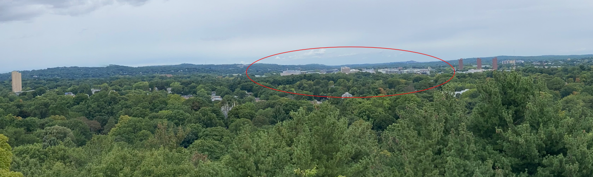
Speaking of big buildings, you may have noticed 3 identical towers popping up East of Alewife. These are the Rindge Towers, a much older example of housing construction in Cambridge. The Rindge Towers are a 777 unit affordable housing complex comprised of three 22 floor towers. They are built in the Le Corbusier style, which advocated dense high-rise housing complexes set within parks and open spaces. Le Corbusier, if you remember, was also the favorite architect of I.M. Pei (the subject of June's architect highlight blog).
The towers were built in an early effort to drive development near Alewife. However, they became associated with crime and were poorly maintained. Thus the need for new development near the Alewife area today. The buildings are no longer considered a criminal hot spot, but there is now a police substation within the towers.
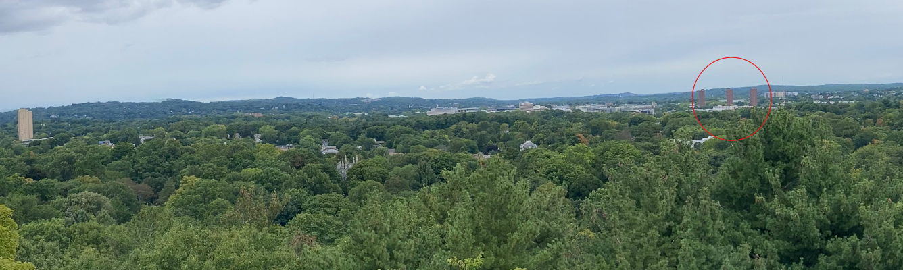
As we continue our 360 spin, we see some fields close by. These belong to the Shady Hill School. This is a private k-8 school in Cambridge. There is not too much to say about it, but it was prominent in the 360 view.
Much farther away, past Downtown Cambridge, we can see a few interesting things in the distance. Encore Casino, the nearest casino to Boston is visible right across the river in Everett. Right around it are a lot of signs of industry. This is the Mystic Generating Station, a power plant built around World War II to meet an increasing energy demand of the city. It burned fossil fuels to do this, and as of June 2024 has been decommissioned as changes to the energy markets made it unprofitable to operate. The land has been purchased by Wynn Resorts, the owner of Encore Casino, to expand their entertainment complex.
Another exciting site in the distance is the Tobin Bridge, the largest bridge in New England. It is a cantilever-truss bridge connecting Boston to Chelsea. It opened to traffic in 1950 with the name Mystic River Bridge, but was later renamed as a memorial to Boston's 46th Mayor, Maurice Tobin.
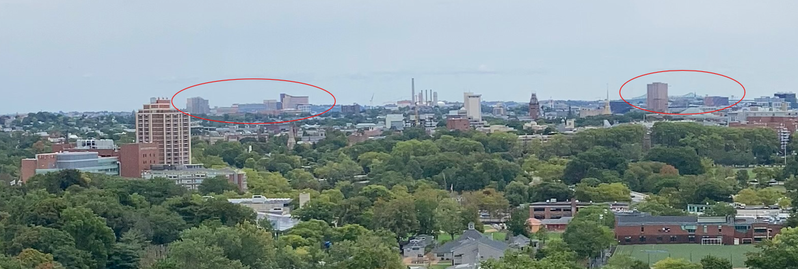
We continue Southwards and we finally see the Boston skyline. Hi Boston!
In front of the sky line we see something that looks out of ancient Greece. A coliseum of sorts. This is the Harvard Stadium. Opening in 1903, it is the oldest original stadium structure still in use for college football. It has been used for other purposes too. The Summer Olympics in 1984 were in Los Angeles, but some of the soccer matches were played in Harvard Stadium (why so far away from LA???). Music festivals and concerts use the facilities as well.
This stadium has some important effects on the history of football. Football is famously not good for the human body. There are injuries, there is permanent brain damage, and it used to be a lot worse!! In 1905, 18 players died. There was a movement to outlaw the game. But President Teddy Roosevelt was not having that. In 1906, President Roosevelt convened a team to reform the rules, at least at the college level. The Intercollegiate Football Conference was formed which would later become the NCAA.
The groups goal was to establish rules to make football safer. One popular proposal was to widen the fields to allow more running room and reduce head on collisions. Harvard just finished their very expensive stadium with old dimensions. They pushed vehemently to block this proposal. The alternative proposal, the forward pass, won instead. So, the Harvard Stadium contributed to forward passing in football and the standard field dimensions. It could have been a very different sport!
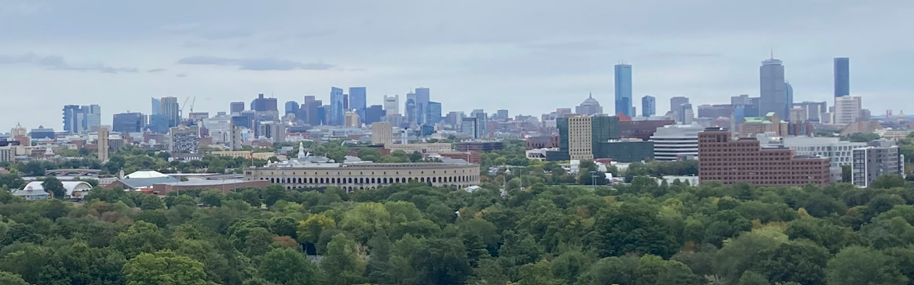
Before we leave the sky line, I wanted to draw our attention to a cluster of towers to the West. Boston's two tallest buildings are not in the main downtown cluster! They are a couple miles away in Back Bay. The John Hancock Tower and the Prudential Tower are the tallest buildings in the city. We talked a bit about the John Hancock building in the architect highlight in June. But I missed one important detail. The title of tallest building is up for debate.
Do you use roof height or antenna height to measure a building? If we were to use roof height. John Hancock wins, sitting at 790 feet to Prudential's 749. But if we include the devices up top, Prudential towers to a whopping 907 feet. Hancock sits at only 852 including the antenna. The rivalry is historic now. Prudential was the tallest building in Boston from 1964 to 1976, the year John Hancock came on the scene. Prudential updated and expanded their antenna through the 70s and 80s to maintain their tallest building status. You can pick your favorite.
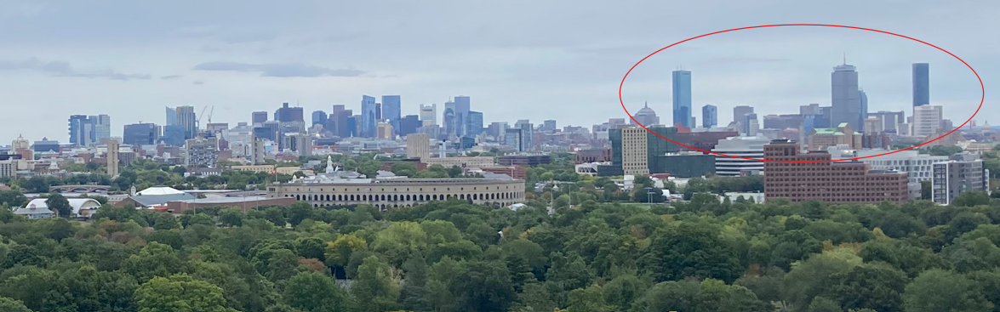
After a stretch of more residential area, we see a chunk of big buildings again. This is the Boston Landing neighborhood inside the Brighton neighborhood of Boston. This is a growing area of the city. The Boston Landing commuter rail stop was an infill stop added in 2012. We see a few prominent buildings over there now. The biggest is the New Balance headquarters. A modern building by Elkus Manfredi Architects, I think it vaguely resembles a shoe, but maybe I am putting a bias because of the company that owns it. Nearby are the training centers for two of Boston's sport teams, the Bruins and the Celtics. A large concert venue, the RoadRunner is on the block as well, sharing space beneath New Balance's indoor track. This track is used for all sorts of track and field events for high school, college, and professional. New developments in this area are planned for the near future.
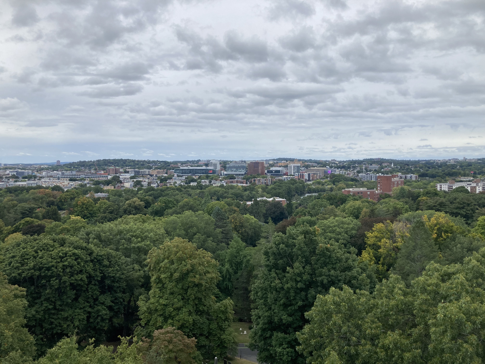
This next spot I would have probably missed in the panorama if I had not been looking for it. High up on a hill, and in a blurry zoomed in resolution, we see a castle like stone structure. This is Boston College. The castle structure is Gasson Hall, one of the classroom and administrative buildings on the campus. I have always thought that it was funny that this school is "Boston College" since it is not in Boston but in the neighboring town of Chestnut Hill. Well, this building's namesake is the culprit for my confusion.
Thomas Gasson, known as the second founder of Boston College, was the 13th president of the school and chose to move it from its original home in Boston's South End to its current home in Chestnut Hill. Gasson was inspired by one of Massachusetts' founder's, John Winthrop's, vision for Boston as a "city upon a hill". I suppose Gasson took this literally for the college and placed it upon a hill. It certainly had room to grow, it now has over 15,000 students and is the seventh largest Catholic school in the U.S.
I think their school has a very nice little art museum.
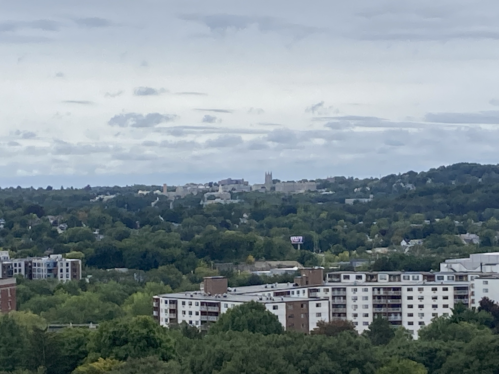
As we travel Westward another cluster of buildings appears. When I was looking at this the things that most caught me off guard was the orange. Why was there so much orange? A giant building with an orange roof? "What is this?" I wondered.
Well, I should have known the answer. What is big and orange? Home Depot. This was just a big Home Depot...
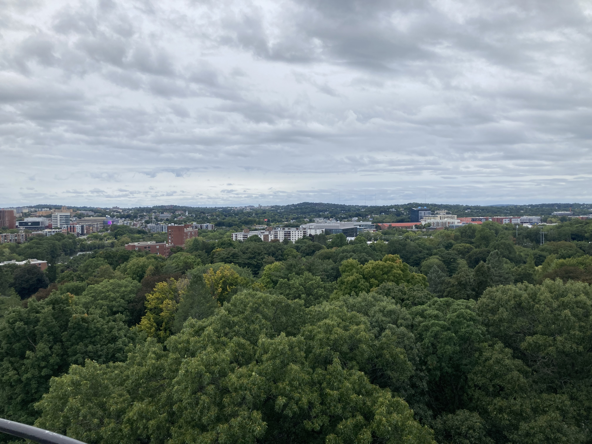
I said Mount Auburn Cemetery was part of Cambridge. But this is only partly true. The cemetery actually spans two cities, it is part of Watertown too! I haven't had much of a chance to explore Watertown. I actually always thought of it as a commuter suburb of Boston. I think that is true, but it also has a lot of character of its own. It has over 30,000 residents and at least five distinct neighborhoods and squares. It is very visible from the tower, sticking out from the wooded areas. It is one of the first European settlements in Massachusetts founded in 1630. It's creative naming is due to abundant water access along the Charles River. The other settlements along the Chuck (as I like to call it) I guess didn't earn this name. For thousands of years before the European colonists, the area has also been settled by Native Americans, the Nonantum and Pequossette. Pequossette roughly translates to "where the narrows open out" due to the shape of the river around what is now Watertown dam. I would say this old name is equally creative to Watertown but at least it was more descriptive. I think this city could be a place worth exploring in its own right someday.
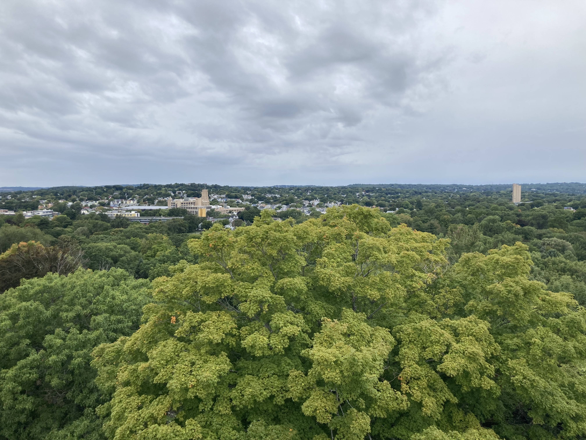
And now we have looped all the way around! Trying to accurately identify objects in a panorama was fun but proved to be much harder and more time consuming than I had expected. Still fun! I would do this activity again if I wanted to learn about a new place or pick out targets to explore. I learned a lot of facts, this was a big blog! I hope you learned at least one fun fact too.
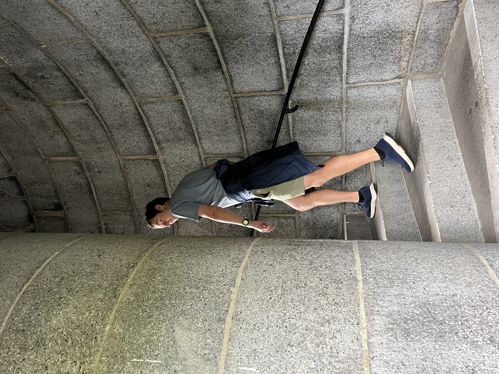
Subscribe to the RSS Feed to see more flâneur content!